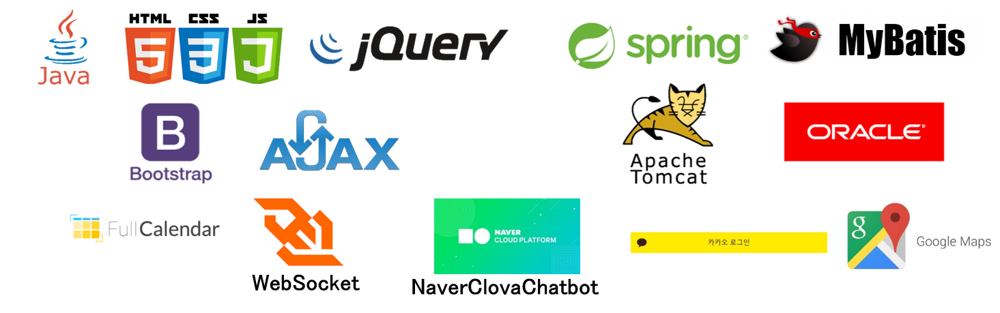
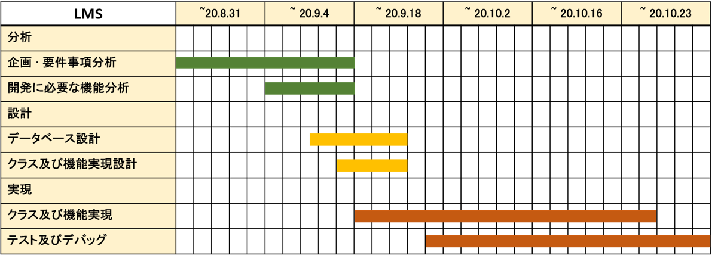
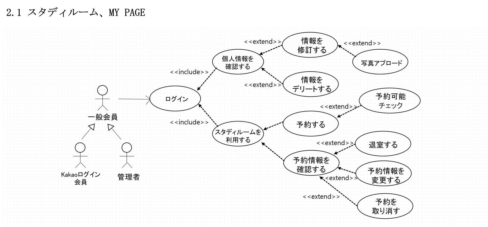
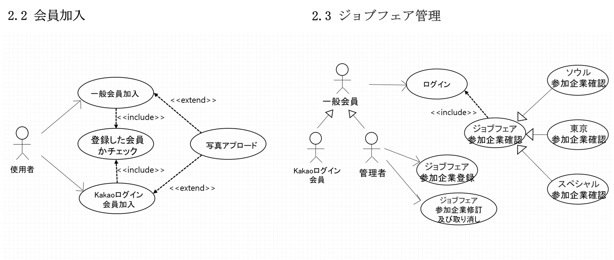
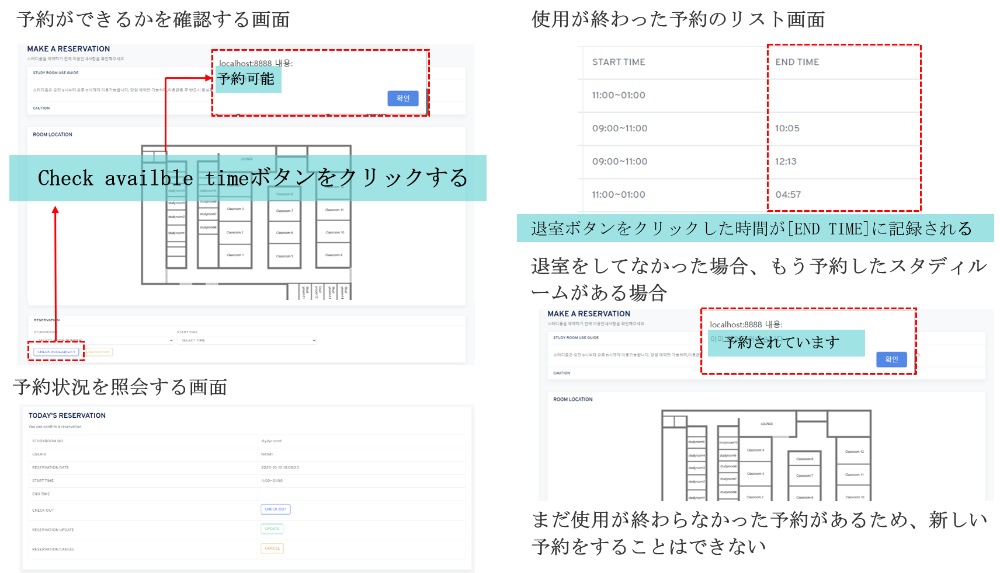

TEAM PROJECT
LMS(Learning Management System) ： SCIT MASTER 学生管理システム
開発期間 ： 2020.08.29 ~ 2020.10.23 (企画期間 ： 1週間 )
開発メンバー ： 5人
システム予約 : SCIT MASTER 課程に参加している、または修了した人達からの就職活動についてのアドバイスを円滑に提供するします。参加しているメンバーの管理、授業についての案内、お知らせ、IT企業の情報、日程管理、センター内にあるスタディルームの予約、ジョブフェア参加企業の管理を提供します。
プロジェクト企画の背景 ： いろいろなプラットフォームを利用することではなく一つのプラットフォームでお知らせ、ジョブフェア情報、授業情報、就活に役に立つ情報を提供することの必要性を感じて学生管理システムを企画しました。
担当機能 :
1) スタディルームの予約管理
2) 一般会員、Kakaoログイン会員の会員加入
3) 会員加入ページでイメージアプロード
4）MY PAGEで個人情報確認
5) 個人情報アップデート、デリート
6）ジョブフェア管理
プロジェクト全体実現
1. 開発企画及び実現 (企画 1週間、開発期間 2020.8.31～2020.10.23)
1.1 要件事項
SCIT MASTER課程に参加したメンバーのと修了生の円滑なコミュニケーションを提供すること、使用者が使いやすいユーザーインターフェースを実現すること、センター利用を円滑にできるようにすること。
1.2 目標
開発期間内に要件事項を正確に把握し、機能を実現していくこと、使用者が使いやすくて便利な機能を提供していくこと。
2. UCD (Use Case Diagram)
 3. 画面
3.1 スタディルーム予約
3.2 スタディルーム予約確認
코드 리팩토링버젼 넣기
担当機能実現以外の役割
1. 企画の時、実現していきたい機能を提案
2. 機能を合わせた後、デバッグサポート
3. 使用者インターフェース設計書
プロジェクトを進行しながら難しかったこと
1) 他のメンバーたちが実現した部分と合わせていくことが難しかったです。
合わせた後も、予想できなかったエラーが生じて直すことに時間がかかってしまうことがよくありました。
それでコードに説明を付けてコードがどんな役割をしているかを把握できるようにしました。他のメンバーのコードを見る時、説明を付けたところを見てエラーが生じた部分をすぐ探し、説明がなかった時よりも早くデバッグすることができました。
2) コロナの影響で一緒に集まって実現していくことがなかなか難しくて私が言ったことが相手には違う意味で受けとられてしまうのを防ぐことが難しかったと思います。
それでオンラインで話し合う時や意見を提案するなど進行状況について話す時は相手が理解しやすく説明することに力を入れていきました。また、話した内容をメモして整理した後、メンバーたちと一緒に確認していくことを通して要件事項を正確に実現することができました。
学んだこと
1. エラーをデバッグするために準備することが必要なこと。
2. 協業をする時、説明を付けたすことが重要であること。
3. 予想できなかった問題や日程の変更でも対応できる計画を立てること。